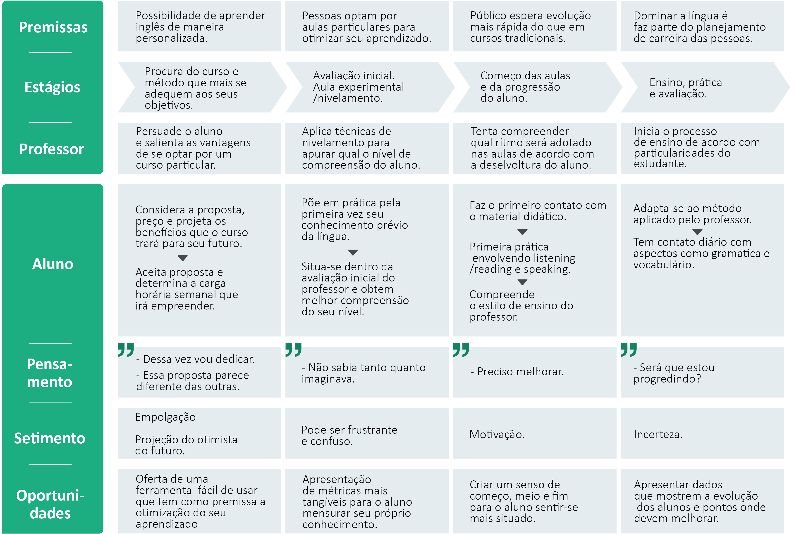

Log-book é uma ferramenta interativa criada para professores e alunos particulares de inglês para registro de atividades e criação de portfólio.
Log-book é uma ferramenta criada para professores e a alunos particulares de inglês para registro de atividades e criação de portfólio.
Aulas de inglês podem ser frustrantes, em muitos casos pela falta da percepção do progresso individual. Alunos carecem de uma ferramenta digital que torne a produção em aula e a avaliação de suas habilidades mais acessíveis.
Alunos e professores irão usar o Log-book como uma ferramenta para registro das atividades dentro de sala de aula, desde sentenças produzidas pelos estudantes até a introdução de novos vocabulários. O professor pode ter a produção em aula como base para mensurar o progresso do aluno e assim entregar uma avaliação mais precisa ao fim de cada ciclo.
Esta ferramenta é destinada a alunos e professores particulares de inglês. Foi projetada para estudantes interessados em otimizarem seu aprendizado dentro de sala de aula e professores que procuram entregar avaliações mais tangíveis e acessíveis aos alunos.
Além de designer, sou professor de inglês, por isso estive envolvido em todo o processo, desde a pesquisa , entrevista com os usuários (alunos e professores), ideação, prototipação, design de interface e teste de usabilidade.
Todos os métodos e abordagens foram realizadas visando centralizar ao máximo os alunos e professores. Aulas presenciais e online foram os cenários deste projeto e suas dores e necessidades foram o ponto focal para a criação da melhor solução.


Apesar de ser a solução para o problema, o Log-book será mais um ponto de contato (touchpoint) durante a aula de inglês, que por sua vez é a verdadeira protagonista do projeto de experiência do usuário. O Mapa de Jornada e o Blueprint abaixo revelam como decorre uma aula de inglês sem o uso do Log-book.


Após uma extensa pesquisa por apps voltados à educação e produção escolar concluiu-se que a ferramenta que mais se aproxima da resolução do problema inicial seria o amplamente usado Class-Dojo. Trata-se de um app focado em gerenciar aulas para alunos dos anos iniciais. Simples, porém muito eficiente na criação de portfólios e avaliações individuais.
O princípio do Class-dojo é ” Trazer cada família para dentro de sala de aula” . O app permite o compartilhamento de atividades do portfólio dos alunos com os pais. Os estudantes podem armazenar e compartilhar seus trabalhos, receber feedback em tempo real e aprender por meio de sua própria produção em sala de aula.
O app possui excelente avaliação na Apple Store (1,475,967 reviews – 4.8 estrelas) e na Google Play (231,629 pessoas– 4.8 estrelas). Eles também possuem um canal no Youtube com pouco menos de 100.000 inscritos para guiar os usuários pelo aplicativo.
É o aplicativo é usado em salas de aula de mais de 180 países em todo o mundo, foi traduzido para 35 línguas e é, de longe, o aplicativo mais popular para gerenciamento de classes. Entre as funcionalidades que ao app promete entregar estão:
Segundo Muhammed Chaudhry, CEO da Silicon Valley Education Foundation Class-dojo “É o mais usado e respeitado aplicativo de gerenciamento de comportamento no mercado”